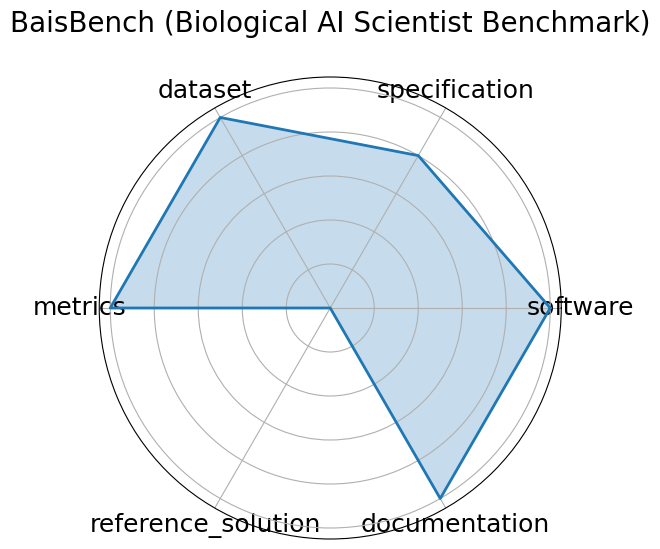

Edit: edit this entry
Date: 2025-05-13
Name: BaisBench Biological AI Scientist Benchmark
Domain: Computational Biology
Focus: Omics-driven AI research tasks
Keywords: single-cell annotation, biological QA, autonomous discovery
Task Types: Cell type annotation, Multiple choice
Metrics: Annotation accuracy, QA accuracy
Models: LLM-based AI scientist agents
Citation:
Erpai Luo, Jinmeng Jia, Yifan Xiong, Xiangyu Li, Xiaobo Guo, Baoqi Yu, Lei Wei, and Xuegong Zhang. Benchmarking ai scientists in omics data-driven biological research. 2025. URL: https://arxiv.org/abs/2505.08341, arXiv:2505.08341.
bibtex: ``` @misc{luo2025benchmarkingaiscientistsomics,
archiveprefix = {arXiv},
author = {Erpai Luo and Jinmeng Jia and Yifan Xiong and Xiangyu Li and Xiaobo Guo and Baoqi Yu and Lei Wei and Xuegong Zhang},
eprint = {2505.08341},
primaryclass = {cs.AI},
title = {Benchmarking AI scientists in omics data-driven biological research},
url = {https://arxiv.org/abs/2505.08341},
year = {2025}}
```
Ratings:
Software:
Rating: 5
Reason: Instructions for environment setup available
Specification:
Rating: 4
Reason: Task clearly defined-cell type annotation and biological QA; input/output formats are well-described; system constraints are not quantified.
Dataset:
Rating: 5
Reason: Uses public scRNA-seq datasets linked in paper appendix; structured and accessible, though versioning and full metadata not formalized per FAIR standards.
Metrics:
Rating: 5
Reason: Includes precise and interpretable metrics annotation and QA accuracy ; directly aligned with task outputs and benchmarking goals.
Reference Solution:
Rating: 0
Reason: Model evaluations and LLM agent results discussed; however, no fully packaged, runnable baseline confirmed yet.
Documentation:
Rating: 5
Reason: Dataset and paper accessible; IPYNB files for setup are available on the github repo.
Average Rating: 4.0
Radar Plot: 